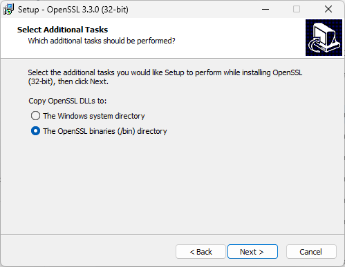
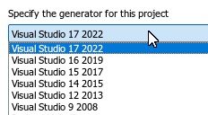
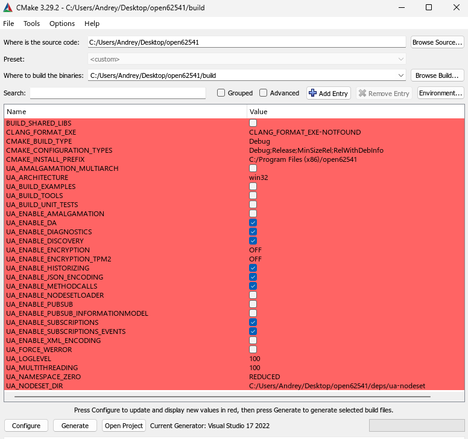
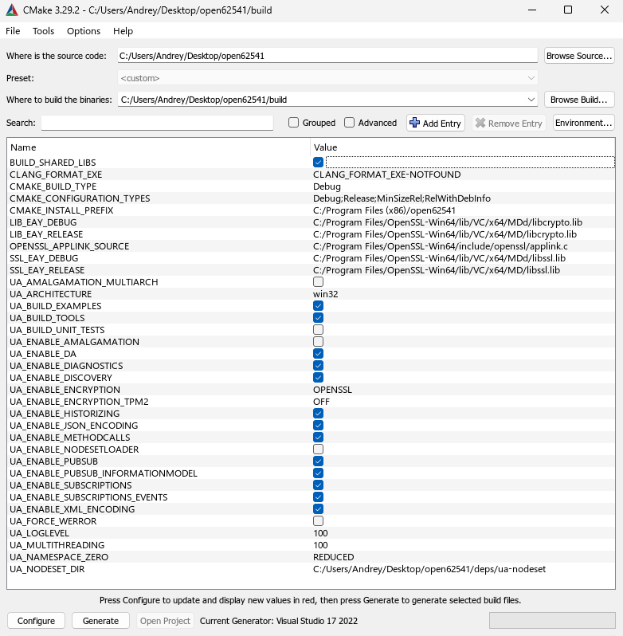
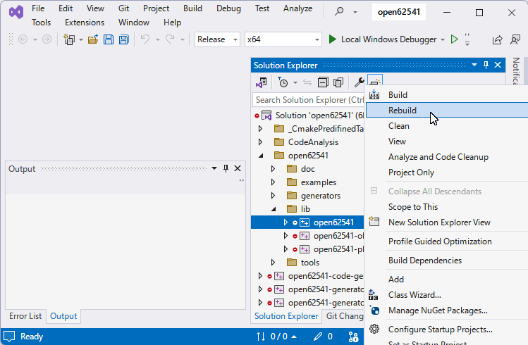
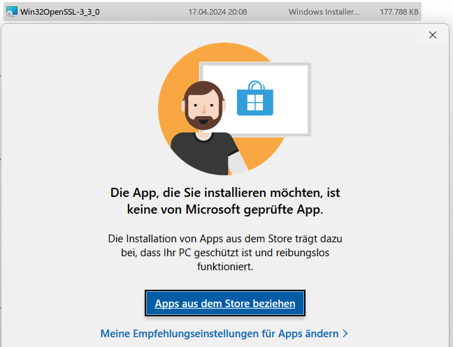
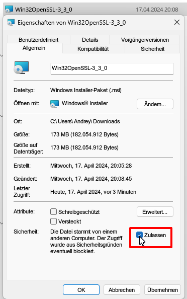

How to build open62541 from sources
Step by step guide - how to build open62541 from sources as Dynamic Link Library.
This guide based on the official Build Instructions, but slightly more detailed.
Get latest sources
>git clone https://github.com/open62541/open62541
Cloning into 'open62541'...
remote: Enumerating objects: 74781, done.
remote: Counting objects: 100% (809/809), done.
remote: Compressing objects: 100% (329/329), done.
remote: Total 74781 (delta 526), reused 642 (delta 457), pack-reused 73972
Receiving objects: 100% (74781/74781), 53.19 MiB | 2.52 MiB/s, done.
Resolving deltas: 100% (56327/56327), done.
>cd open62541
Tools needed
As compiler — the latest Microsoft Visual Studio Professional 2022 v.17.9.6 (free Visual Studio Community should be OK as well).
Additional tools:
OpenSSL v.3.3.0 (Win64 / Win32).
Everything installed “by default”.
OpenSSL I prefer to install in dedicated folder

Git for Windows must be installed as well (v.2.44.0)
Preparation
After installation Install python-six with the pip package manager:
>pip install six
Build from command line
Assumed that you already in open62541 directory. If not, then
>cd <path-to>\open62541
Then
>mkdir build
>cd build
>"C:\Program Files\CMake\bin\cmake.exe" .. -G "Visual Studio 17 2022"
Of course, of you have different version of Visual Studio, then the last command will be different, for example, for Visual Studio 2015 “Visual Studio 14 2015”, other versions:

In case of success you should see something like that:
-- Selecting Windows SDK version 10.0.22621.0 to target Windows 10.0.22631.
-- The C compiler identification is MSVC 19.39.33523.0
-- Detecting C compiler ABI info
-- Detecting C compiler ABI info - done
-- Check for working C compiler: C:/Program Files/Microsoft Visual Studio/2022/Professional/VC/Tools/MSVC/14.39.33519/bin/Hostx64/x64/cl.exe - skipped
-- Detecting C compile features
-- Detecting C compile features - done
-- Found Python3: C:/Program Files/Python312/python.exe (found version "3.12.3") found components: Interpreter
-- Found Git: C:/Program Files/Git/cmd/git.exe (found version "2.44.0.windows.2")
-- open62541 Version: v1.4.0-rc2-386-gb1f5e0ea5
-- The selected architecture is: win32
-- CMAKE_BUILD_TYPE not given; setting to 'Debug'
-- Could NOT find Sphinx (missing: SPHINX_EXECUTABLE)
-- Could NOT find LATEX (missing: LATEX_COMPILER)
-- Configuring done (5.0s)
-- Generating done (0.1s)
-- Build files have been written to: C:/Users/Andrey/Desktop/open62541/build
Now in \build folder you should have Solution named “open62541.sln”.
Build from GUI
Initially everything will be red:

Now I will turn ON the Option BUILD_SHARED_LIBS, as well as SSL, and some other which could be useful:

And hit Generate.
The log file
Selecting Windows SDK version 10.0.22621.0 to target Windows 10.0.22631.
open62541 Version: v1.4.0-rc2-386-gb1f5e0ea5
The selected architecture is: win32
Could NOT find Sphinx (missing: SPHINX_EXECUTABLE)
Could NOT find LATEX (missing: LATEX_COMPILER)
CMake Warning at examples/CMakeLists.txt:195 (MESSAGE):
Can't build custom datatype examples on WIN32 when BUILD_SHARED_LIBS
enabled. Skipping custom_datatype_client and custom_datatype_server!
CMake Warning at examples/CMakeLists.txt:235 (message):
Build option BUILD_SHARED_LIBS not supported for standalone subscriber and realtime examples. Skipping these examples.
Configuring done (1.0s)
Generating done (0.8s)
Compile in Visual Studio
Open Solution, select library and rebuild:

If everything goes well, you will see at the end:
9> Creating library C:/Users/Andrey/Desktop/open62541/build/bin/Release/open62541.lib and ...
9>open62541.vcxproj -> C:\Users\Andrey\Desktop\open62541\build\bin\Release\open62541.dll
========== Rebuild All: 9 succeeded, 0 failed, 0 skipped ==========
Links
CMake projects in Visual Studio
Troubleshooting
In latest Windows 11 attempt to install msi will cause this message:

Easiest way to fix is set “Allowed” flag in the Properties (sorry for German screenshot)

https://stackoverflow.com/questions/54985518/build-open62541-dll-with-visual-studio-2017